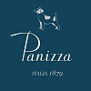

Наши партнеры
CANOE

CORSONELA

FREDRIKSON

LANSILAKKI

PANIZZA
TONAK

Выбор шапки – дело ответственное и требующее времени. Вот уже более 12 лет наша компания помогает подобрать всем подходящий головной убор.
Очень часто покупатели сталкиваются с тем, что магазин работает лишь с одной маркой. Такой «патриотизм» играет на руку производителю, но вряд ли придётся по душе покупателю. Ведь ограничиваясь одним партнёром, магазин ограничивает выбор. Наш магазин «Фомас» предоставляет своим покупателям неограниченную свободу выбора. Ведь мы сотрудничаем с более чем двадцатью российскими и зарубежными производителями. Нашими партнёрами являются такие производители, как La Planda, Sergio&Leone, Fomas, Marhatter, Noryalli и другие.
Прежде чем сделать компанию-производителя своим партнёром, мы посещаем презентации всех известных российских и зарубежных производителей. Только удостоверившись в качестве и профессионализме компании, мы заключаем договор о поставке коллекции в наш магазин.
У нас Вы найдёте преимущественно трикотажные шапки, где содержание шерсти составляет не менее 50%. Наш принцип – поставка товаров только из качественного сырья. В Воронеже Вы можете посетить наши магазины по адресам:
Наши консультанты не только ознакомят Вас с огромным ассортиментом, но также помогут подобрать мужские, женские шапки, подходящие именно Вам. Ведь каждый человек имеет определённый, уникальный тип лица. Вместо того чтобы слепо ориентироваться на моду, лучше довериться профессионалам, которые учтут не только модные тенденции данного сезона, но и Ваши индивидуальные особенности.
В нашем ассортименте Вы найдёте модели, относящиеся к самым разным стилям: от спортивного до классического. У нас Вы сможете приобрести также меховые шапки, которые станут украшением к одежде и будут гармонично дополнять весь образ в зимнее время.
Обычно все магазины в первую очередь заботятся о женской части населения. Но наша компания отличается своим подходом. В нашем ассортименте представлено огромное количество мужских моделей. Для мужчин это не только стильное дополнение, но также и показатель статуса и даже рода деятельности.
Кроме того, в ассортименте нашего магазина для юношей и девушек представлены молодежные коллекции с учётом самых современных веяний моды. Все коллекции головных уборов – «осень–зима» и «весна–лето», мужские, женские и юношеские – постоянно пополняются и обновляются. В весенне-летний сезон в наших магазинах можно приобрести красивые женские купальники, парео, туники от таких известных производителей, как «Трибуна», «Infinity», «Fianeta», «Rivage Line», «Self», «Polovi».
Особое место в нашей компании уделяется социальной поддержке. Мы предоставляем скидку студентам, бюджетникам и пенсионерам в размере 20%. Скидку получают также предъявители наших дисконтных карт.
Если у Вас всё ещё возникает вопрос, почему Вам стоит выбрать именно наш магазин, то перечислим наши основные преимущества:
Надеемся, что теперь выбор женских или мужски шапок станет для Вас лёгким и увлекательным занятием, которое будет приносить лишь положительные эмоции.